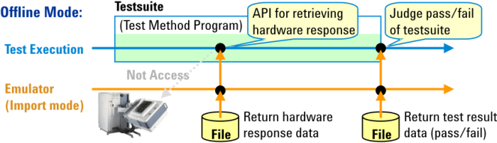
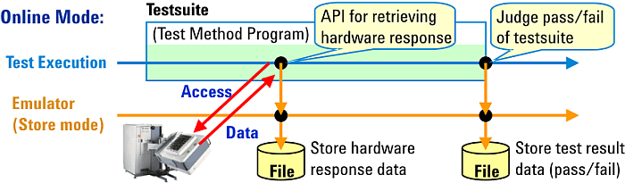
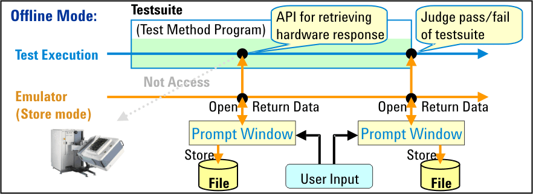

Hardware Response Emulator
When you debug a testflow or test suite offline, you may encounter the following two problems:
- Random and insignificant data is returned to the test method APIs.
- You cannot control the pass/fail results of each test suite easily.
SmarTest provides a tool, Hardware Response Emulator (HWRE), to resolve the above problems.
The HWRE runs in the background and returns already prepared data such as analog waveform data, measurement values, pass/fail results, and so on at appropriate points in the test.
The HWRE helps you to debug your test method program using actual measurement data such as waveform data captured by digitizers. This tool also helps you to check the execution flow of the testflow easily by setting the pass/fail state for each test suite.
Import mode
In this mode, the emulator imports the data stored in a hardware response file and returns the data to the testflow or test method API during execution.

Store mode
In this mode, the emulator creates the hardware response files from the measurement data during online execution or from user-provided data during offline execution.
When running a testflow or test suite in online mode, the emulator automatically stores the test results (pass/fail) and hardware response data in different hardware response files when the execution reaches the end of the test suite or the test method API for retrieving hardware response data.

When running a testflow or test suite offline, the emulator opens a prompt window when the execution reaches the end of the test suite or the test method API for retrieving hardware response data. In the window, you can specify the desired data as the virtual test result (pass/fail) or hardware response. You can also use the data files as virtual data in online mode.

Functional changes
- Introduced before SmarTest 6.3.2